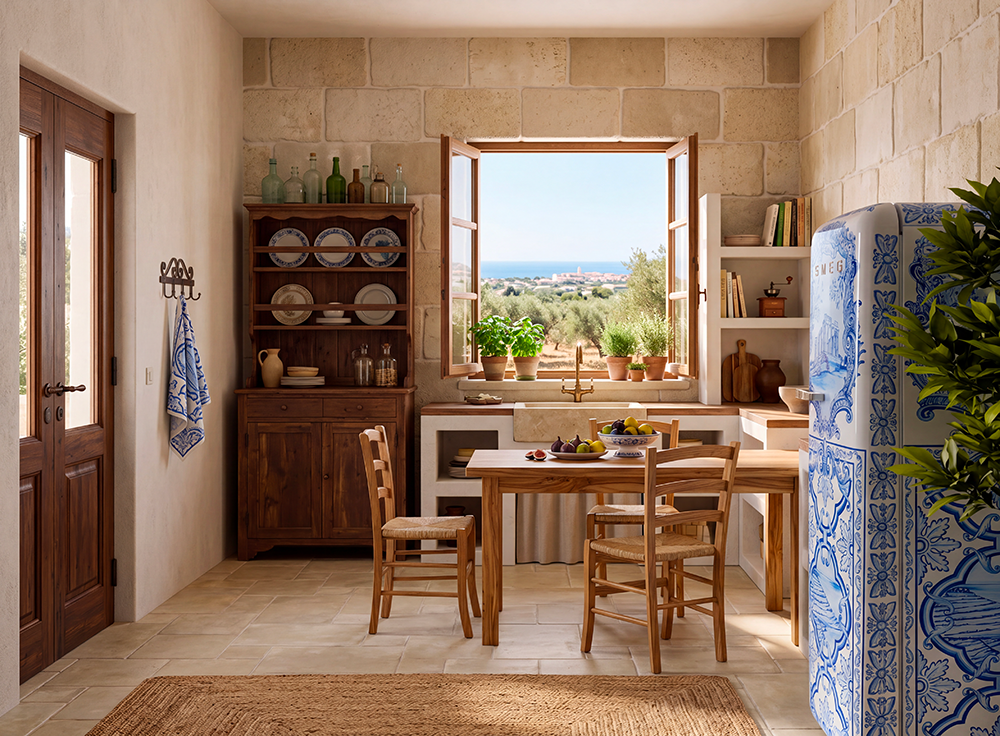
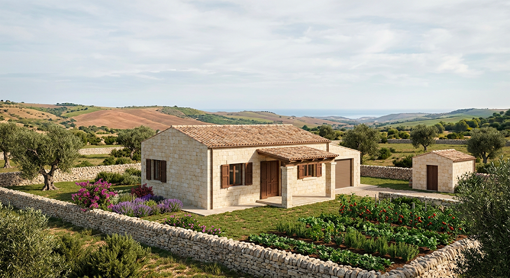

Baglio San Michele è una masseria fortificata del XVI secolo in provincia di Ragusa, rigenerata come comunità intenzionale stabile e radicata nel Sicilian Slow Living. Il progetto si sviluppa in fasi progressive che permettono di costruire un luogo di vita autentico, dove abitazione, lavoro, relazioni e territorio formano un unico ecosistema.
Non è un resort né un villaggio turistico: è un luogo da abitare tutto l’anno, con regole chiare, governance condivisa e un forte orientamento alla stabilità familiare e alla responsabilità reciproca. Ogni fase è pensata per sostenere la crescita della comunità nel tempo, senza speculazioni e con un forte senso di continuità.

Il nucleo originario della masseria viene recuperato con un restauro filologico che rispetta le caratteristiche architettoniche del XVI secolo: volte in pietra, muri in tufo, materiali naturali locali.
Nascono 14 appartamenti di qualità distribuiti tra piano terra e primo piano, tutti con accesso agli spazi comuni del Baglio (cortile centrale, piccola cappella, cucina condivisa, laboratori artigianali e sale di incontro).

Sui terreni della masseria verranno costruite 20 nuove abitazioni in pietra iblea tradizionale, distribuite nel paesaggio con rispetto per l’ambiente e per la storia del luogo. Ogni casa colonica sarà dotata di un lotto privato di circa un ettaro, con orto, giardino e frutteto, favorendo l’autosufficienza e il contatto diretto con la terra.
Il progetto è pensato per accompagnare le famiglie nel lungo periodo. Chi acquista un appartamento nel Baglio storico (Fase 1) e, con la crescita della famiglia, desidera passare a una casa colonica più ampia (Fase 2), può restituire l’unità abitativa al Baglio. Il valore riconosciuto dell’appartamento verrà scalato dal prezzo della nuova casa colonica, facilitando il passaggio verso una soluzione più grande senza dispersione di risorse e mantenendo la continuità all’interno della stessa comunità.
Questo meccanismo favorisce la stabilità residenziale e permette alle famiglie di evolvere il proprio spazio abitativo restando parte del progetto, senza dover lasciare il contesto comunitario che hanno scelto.

Ogni nucleo familiare dispone di un’abitazione privata. Gli spazi comuni (cortile, cappella, laboratori, cucina condivisa) sono gestiti e mantenuti insieme, creando un equilibrio tra intimità e vita comunitaria.
Il Capitolo dei Savi (organo di 9 membri) gestisce le risorse comuni, approva i nuovi ingressi e garantisce il rispetto del Regolamento interno. Clausole anti-speculative tutelano il bene comune e impediscono derive speculative.
Contributi dei membri, micro-filiere interne (orto, trasformazioni alimentari, laboratori artigianali) e formazione permanente. Niente residenze “mordi-e-fuggi”: l’economia è pensata per sostenere la comunità nel tempo.
Bambini e anziani sono al centro. Il progetto favorisce la trasmissione di saperi rurali, artigianali e valoriali tra le generazioni, creando un tessuto sociale solido e inclusivo.